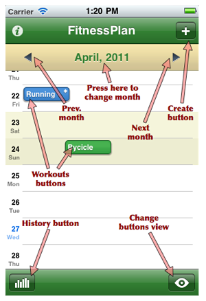
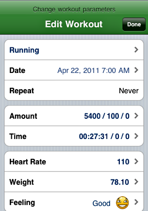
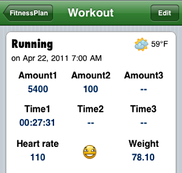
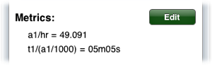
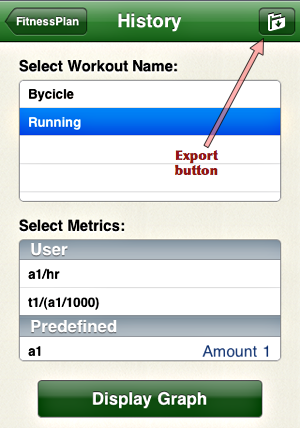
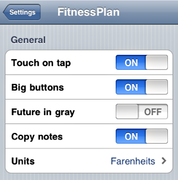

This application will help you to track fitness exercises you have done and to plan future ones.
Every time you do an exercise, you enter here the date, time and some details for it. It is possible to create recurrent activities. You may also track your progress or overall amount of each discipline practice within a period of time with History view.
See the main screen with labels.
Version 3.0 of FitnessPlan includes one paid feature - Pro mode.You can buy it as in-app purchase from the "About" and the "History" screens. This purchase will unlock additional fields for your workouts. These fields are: two additional amount fields, two additional expended time fields, heart rate, weight, feeling and weather condition for every workout. What's more, it adds a completely new feature - metrics. You can use it to calculate you own special performance indicators and use it in the graph.
To create a new workout you can press the [+] button or tap on any empty space on the screen. In this case the popup dialog will appear and you should confirm creation on the selected day and rough time. You will be able to change the date and time later.
Enter as much workout details as you want and press [Save] button to save it. Or [Cance] to cancel.
Note, that now you can change the name of every amount field. Just press the amount label and enter the name you want.
To view previously created workout press its button on the main screen. The workout view window will be displayed.
To modify it press [Edit] button. Note, that changing the date or time of repeating workout will break the recurrency chain. In other words, such workout becomes standalone. But it will not affect anything except deletion of all the chain.
You can delete the workout from editing window. When you delete repeating workout you will be asked if you what to delete exactly one workout or all the chain up to the end starting from edited workout.
If you've bought Pro features you will be able here, in workout view screen, to manage you own metrics.
Metrics are available for Pro feature only. Metrics are just formulas you create to calculate the performance indicator you need (pace or summarized amount, for instance).
Every metric consists of two parameters: formula and type.
The formula is just a normal formula with +, -, *, - and parentheses as you use in Excel, for example, but no functions (like sin, cos or sum) available. To calculate you real workout data you use special predefined variables (listed below).
Type is very important. Type could be Value or Time. Value is just a value, like the distance you've run. Time is also a value but treated as number of seconds and minutes. Time metrics are being displayed in time format (HH:MM:SS).
See the examples of metrics below.
| Variable names | Description |
|---|---|
| a1, amount | first amount |
| a2 | second amount |
| a3 | third amount |
| t1, time | first time (in seconds) |
| t2 | second time (in seconds) |
| t3 | third time (in seconds) |
| hr, hrate | heart rate |
| w, wgt, weight | weight |
Note that t1, t2 and t3 fields store seconds.
t1 / a1 -- pace (min per km) if you put km in the first amount field, or
t1 / (a1 / 1000) if you put meters. Use type Time.
(a2 * a3) / t1 -- speed if you put number of loops in a3 and loop distance in a2. Use type Value.
a2 / hr -- it could be the distance (or climbing) / heart stroke calculation. Use type Value.
Press [History] button to open the History screen.
History screen will let you select the discipline (workout name) and one or two metrics to be shown in the graph.Press [Display] button to display the graph screen.
To access the app settings use system Settings app.
Here are the following settings parameters: